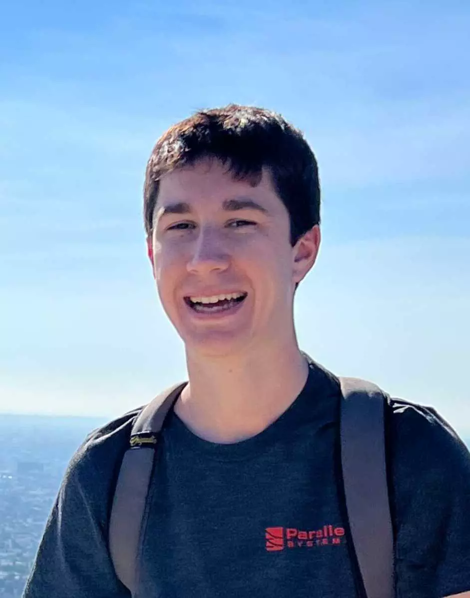
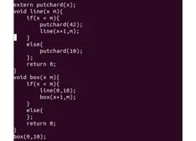
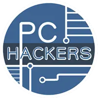
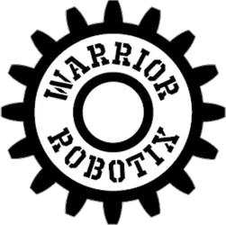

Who am I?
I am currently a co-op student at the University of Waterloo pursuing a B.Asc in Mechatronics Engineering.
My current areas of interest are:
- Lithium Ion Cell Modelling
- SV-PWM and Inverter design
- Wireless Charging
- Resource-Constrained, real-time embedded systems
or on my LinkedIn: here My public key is: here
My resume is: here 
Work Experience [–]
Parallel Systems
Summer 2022, Winter 2023
Electrical Intern
Los Angeles, CA
- Designed HV PCBs in Altium and brought up RTOS firmware for said boards
- Worked extensively on bringing up isoSPI communication and working with LTC68XX chips
- Debugged critical HF and VHF communication systems including Gigabit Ethernet systems
- Developed HITL test boards for validating production system boards
Tesla
Fall 2021
Firmware Developer
Palo Alto, CA
- Developed highly-performant, resource constrained firmware for the Drive Inverter boards
- Developed and deployed mission-critical features for millions of production vehicles
- Developed firmware across multiple chip architectures to accommodate for 2020/2021 Semiconductor Shortage
 Apple
Winter 2021
Embedded Software Developer
Remote
Apple
Winter 2021
Embedded Software Developer
Remote
- This is hidden to preserve confidentiality
Ford Motor Company
Summer 2020
Full Stack Developer
Remote
- Worked on system to process vehicle core dump files into easily readable, accessible and shareable online formats using GDB and Java
- Rewrote permissions system to enable complex and nested conditions while maintaining performance on system with over 1 billion database records
- Revamped vehicle file text editor to enable split screen, persistent session behaviour and numerous UX improvements in JS
Groupdesk
Summer 2019
Full Stack Developer
Toronto, ON
- Developed CRUD services, using Angular to remove user dependence on technicians
- Built Google Analytics system from the ground up, to better understand user behaviour and identify user priorities
- Automated front end QA using Go, Docker and Chromedp to increase release efficiency and stability
Projects and Teams [–]
Waterloo Formula Electric
September 2019 - Present
Technical lead
Waterloo, ON
- Won 2nd in Class for 2021 Competition
- Designed multi-stage precharge system to compensate for parasitic loads on HV bus
- Implemented Vehicle Dynamics Algorithms like: Traction Control, Torque Vectoring, Endurance Mode for vehicle
- Developed accurate state of charge algorithm using Coulomb Counting and Voltage Maps
- In the progress of designing entire vehicle, modular HITL
- Developed numerous features in embedded C for the various resource constrained ARM M0 and M7 boards
- Built drivers to interact with the different vendor provided, proprietary devices: LTC6804/11/12, Sevcon Motors, LTC4110, etc.
- Created Python templating system to autogenerate embedded C functions

Isidore
December 2019 - June 2020
Creator
Waterloo, ON
- Developed custom programming language frontend using C++ and LLVM
- Implemented various modern constructs like: Object Orientation, Heap allocation, Multifile Inclusion, FFI, Complex primitives, etc.
- Experimented with various design patterns like Reference Counting, Garbage Collection, dynamic typing, JIT compilation
FLATTEN
Flatten
April 2020 - June 2020
Creator
Mississauga, ON
- Built performant and efficient MERN stack web system to study the spread of COVID-19 in Ontario
- Recieved over 400,000 submissions through website monitoring geographical distribution of people with symptoms
- Featured on numerous media outlets including: the CBC, Toronto Star, Global and Mail, and CTV
Lego 3D Printer
November 2019 - December 2019
Creator
Waterloo, ON
- Designed and made 3D printer using LEGO Mindstorms for first year project
- Implemented control algorithm to ensure fast and accurate movements as shown here
Self Driving Go Kart
May 2019 - July 2019
Creator
Mississauga, ON
- Modified Go Kart to be drive-by-wire through a RC car radio tranceiver
- Developed self driving car system using YOLO algorithm in Python and OpenCV as shown with this test footage here
- Designed and manufactured compound gearbox using bicycle sprocket
Grade 12 Circuits Projects
Spring 2019
Developer
Mississauga, ON
- Built audio amplifier circuit(as shown on the left) with 3.5mm line in as well as microphone input
- Experimented with Op-Amps and Zener Diodes
- Built Regulated DC Power Supply using Full Bridge Rectifier

PCHackers
July 2018 - May 2019
Logistics Executive
Mississauga, ON
- Hosted and organized Canada's largest High School student run hackathon ever with 200+ participants
- Negotiated with University of Toronto Mississauga officials to acquire as a venue
- Acquired a verification and affiliation with MLH
- Managed teams of volunteers to organize talks, distribute food and judge teams
The 6ix Robotics
May 2018 - February 2019
Founder, Technical Lead
Mississauga, ON
- Founded private Vex robotics team and acquired large corporate sponsors like IBM and Deloitte
- Designed and manufactured robot for competition
- Developed firmware with complex autonomous system using PID as shown in the following clips: here and, here
- Performed strongly in several competitions, winning multiple awards and going undefeated in a tournament. As shown on the instagram page.
Eve
May 2018
Technical Lead
Mississauga, ON
- Developed at 8 hour hackathon
- Built system using PHP and Twilio to search the internet using SMS
- Users could access the weather, view wikipedia pages and much more by texting commands to a phone number

4659 Vex Robotics
September 2016 - May 2018
President. Technical Lead
Mississauga, ON
- Led High School Vex Robotics team to World Championships
- Designed and manufactured 6 robots per tournament for competition
- Developed firmware with complex autonomous system using PID as shown in the following clip: here
Arcade Cabinet
2013 - 2014
Builder
Mississauga, ON
- Built wooden arcade cabinet
- Wired and soldered Adafruit arcade controls to Raspberry Pi GPIO board
- Installed and setup GPIO controls for RetroPie, RPi OS
Education [–]
University of Waterloo
September 2019 - April 2024
Mechatronics Engineering
Waterloo, ON
- CGPA - 92.52%
- Winner of the Alan Mulally Leadership in Engineering Scholarship for leadership and innovation in the automotive space.
- MTE 320: Actuators and Power Electronics
- MTE 262: Introduction to Microprocessors and Digital Logic
- MTE 241: Introduction to Computer Structures & Real-Time Systems